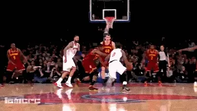
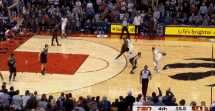

急停跳投
急停跳投是一种非常重要的篮球进攻技术。它要求球员在接球后迅速停下脚步,保持平衡,然后跳起投篮。这需要很好的爆发力和控球能力。
急停跳投是进攻队员在行进间运用突然急停摆脱防守队员后投篮的方法，分持球急停跳投和运球急停跳投两种。
持球急停跳投是在快速移动中，用跨步或跳步急停接球，并及时起跳投篮。 运球急停跳投是突破结合跳投的重要方式。 当进攻队员背向或侧向篮筐持球站立时，可以一脚做中枢脚转身跳起投篮。 
要想练好投篮必须有正确的投篮方法、恰当的瞄准点、合适的飞行路线和球的旋转，并且全身要协调用力。